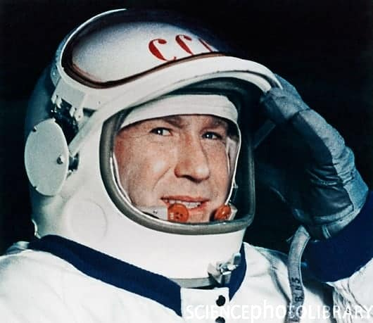
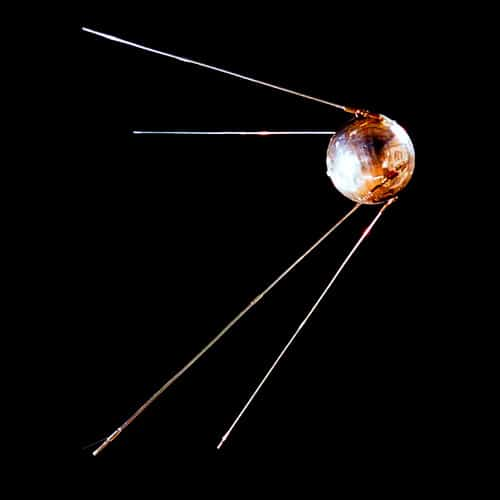
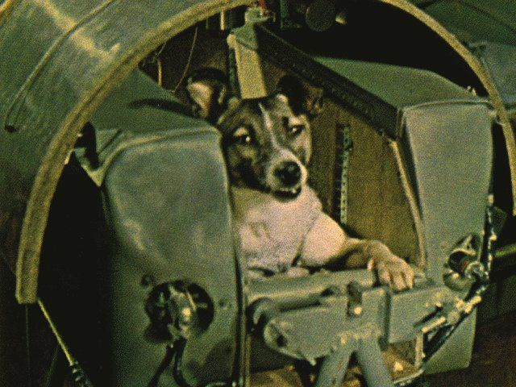
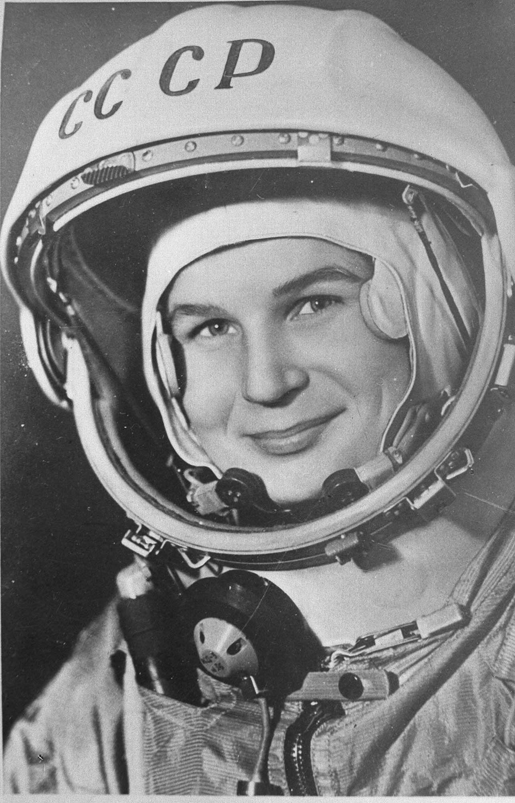
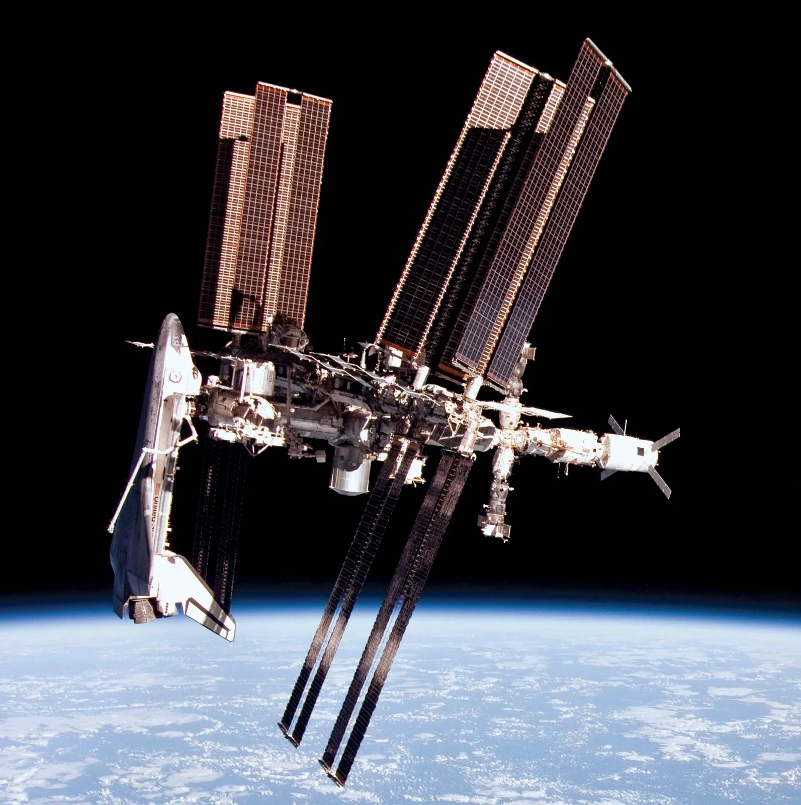

History and Key Achievements of Human Space Activities
Sputnik 1 and the Start of the Space Race
The Soviet Union launched the first artificial satellite, Sputnik 1, on October 4, 1957. This event marked the beginning of the space age and the start of the space race between the United States and the Soviet Union.

The First Animal in Space
Laika, a stray dog from Moscow, became the first living being to orbit the Earth aboard Sputnik 2 on November 3, 1957. Although Laika did not survive the mission, her journey provided valuable data on the effects of space travel on living organisms, paving the way for human spaceflight.

First Human in Space
Soviet cosmonaut Yuri Gagarin was the first human in space. On April 12, 1961, he orbited the Earth once aboard the Vostok 1 spacecraft, marking a significant milestone in human space exploration. By achieving this major milestone for the Soviet Union amidst the Space Race, he became an international celebrity and was awarded many medials and titles, including the Hero of the Soviet Union, the nation's highest honour. Officially, the US congratulated the Soviet Union, however, pressure mounted to match the achievement. Kennedy and his advisors eventually settled on the Moon as their goal, and, on the 25th May 1961, just 3 weeks after NASA finally launched astronaut Alan Shepard into space on a brief suborbital flight, Kennedy introduced what would become the Apollo program, during an address to Congress.

First American in Space
American astronaut Alan Shepard became the first American in space on May 5, 1961, when he flew aboard the Freedom 7 spacecraft. This historic flight lasted about 15 minutes and was a suborbital flight, meaning Shepard did not complete an orbit around Earth. His successful mission helped to establish the United States as a major player in the Space Race.

First Spacewalk
Soviet cosmonaut Alexei Leonov performed the first spacewalk on March 18, 1965. During his mission aboard the Voskhod 2 spacecraft, Leonov exited the spacecraft and floated in space for about 12 minutes, demonstrating that humans could work outside their spacecraft in the vacuum of space.

First Woman in Space
Soviet cosmonaut Valentina Tereshkova became the first woman in space on June 16, 1963, when she flew aboard the Vostok 6 spacecraft. Her mission lasted nearly three days and marked a significant milestone in the history of human space exploration.

Moon Landing
The Apollo 11 mission fulfilled President John F. Kennedy's 1961 goal of "landing a man on the Moon and returning him safely to the Earth" before the end of the decade. On July 20, 1969, astronauts Neil Armstrong and Edwin "Buzz" Aldrin became the first humans to set foot on the lunar surface, while Michael Collins orbited above in the command module. Armstrong's famous words, "That's one small step for [a] man, one giant leap for mankind," were broadcast to millions of people around the world, symbolising human achievement and exploration. The mission paved the way for 5 additional moon landings between 1969 and 1972, expanding our understanding of the Moon's geology and environment.

Establishment of the International Space Station
The International Space Station (ISS) was established through a massive collaborative effort initiated in 1984 by US President Reagan, later merging US, Russian, European, Japanese, and Canadian efforts in 1993. Assembly began in November 1998 with the Russian Zarya module, followed by the US Unity node, leading to continuous habitation since November 2, 2000. The ISS serves as a microgravity laboratory for scientific research across various disciplines, including biology, physics, astronomy, and materials science. It also fosters international cooperation, with contributions from 15 nations, and has hosted over 240 individuals from 19 countries. The ISS has significantly advanced our understanding of long-duration spaceflight's effects on the human body, informing future missions to the Moon and Mars.

Photo Gallery: Key Achievements in Space Exploration

A replica of Sputnik 1, the first artificial Earth satellite.

Model of Sputnik 2 at the Memorial Museum of Cosmonautics in Moscow.

Postage stamp commemorating the Sputnik 2 mission.

Laika the dog, the first animal in space, seated inside Sputnik 2.

Soviet cosmonaut Yuri Gagarin just before he became the first human to journey into outer space.

Alan Shepard, the first American in space.

Soviet cosmonaut Alexei Leonov performing the first spacewalk.

Soviet cosmonaut Valentina Tereshkova, the first woman in space.

Apollo 11 lifting off.

Apollo 11 moon landing.

Inside the International Space Station.

The International Space Station